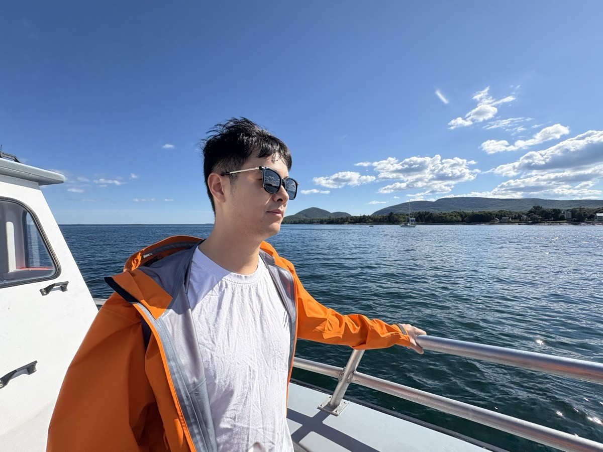

Princeton University
Ph.D. in Electrical and Computer Engineering
Advisor: Prof. Sharad Malik
2020 – 2025

Formal Verification Engineer
Apple
I am a formal verification engineer at Apple. I received my Ph.D. in Electrical and Computer Engineering from Princeton University in 2025, advised by Prof. Sharad Malik. Before that, I completed my undergraduate studies at Zhejiang University.
My research focuses on hardware formal verification and hardware security. I use mathematical logic to rigorously reason about the functionality and security of systems.
My past work spans secure cache design, security verification of hardware enclaves, formal detection of transient execution vulnerabilities in processors, and functional subsetting of hardware accelerators.
Ph.D. in Electrical and Computer Engineering
Advisor: Prof. Sharad Malik
2020 – 2025
M.A. in Electrical and Computer Engineering
2020 – 2022
B.Eng. in Computer Science and Technology
2016 – 2020
Formal Verification Engineer
September 2025 – Present
GPU Formal Verification Intern
June 2024 – August 2024
Hardware Verification Intern
June 2022 – August 2022
* denotes co-first authors.
Qinhan Tan, Akash Gaonkar, Yu-Wei Fan, Aarti Gupta, Sharad Malik
Design, Automation and Test in Europe (DATE), 2026
Best Paper Candidate
Qinhan Tan*, Yuheng Yang*, Thomas Bourgeat, Sharad Malik, Mengjia Yan
Architectural Support for Programming Languages and Operating Systems (ASPLOS), 2025
Qinhan Tan*, Yonathan Fisseha*, Shibo Chen*, Lauren Biernacki, Jean-Baptiste Jeannin, Sharad Malik, Todd Austin
ACM Conference on Computer and Communications Security (CCS), 2023
Distinguished Paper Award
Qinhan Tan, Aarti Gupta, Sharad Malik
International Conference on Computer-Aided Design (ICCAD), 2022
Qinhan Tan*, Zhihua Zeng*, Kai Bu, Kui Ren
Network and Distributed System Security Symposium (NDSS), 2020
Princeton University
Fall 2021, Fall 2022, Fall 2023
Spring 2023, Spring 2025